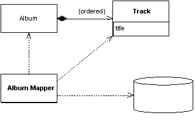
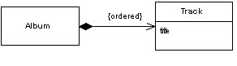

| Home | Articles | Talks | Links | Contact Me | ISA | ThoughtWorks |
Have one class perform the mapping for another

Some objects naturally appear in the context of other objects. Tracks on an album may be loaded or saved whenever the underlying album is loaded or saved. If these tracks are not referenced to by any other table in the database, you can simplify the mapping procedure by having the album mapper perform the mapping for tracks as well - treating the mapping of the tracks as a Dependent Mapping.
The basic idea behind Dependent Mapping is that one class (the dependent) relies upon some other class (the owner) for its database persistence. Each dependent can have only one owner and must have one owner.
This manifests itself in terms of the classes that do the mapping. In the case of Data Mapper mapper class for the track. For an Active Record the track class won't contain any database mapping code, it will all be in the owning album. A Row Data Gateway will have no database code in the dependent. In a Table Data Gateway there will typically be no dependent class at all, all the handling of the dependent is done in the owner. In most cases every time you load an owner, the dependents are loaded too. If the dependents are expensive to load and infrequently used you can use a Lazy Load to avoid loading the dependents until you need them.
An important property of a dependent is that it does not have an Identity Field and therefore doesn't get stored in a Identity Map. It therefore cannot be loaded by a find method that looks up an id. Indeed there is no finder for a dependent, all finds are done with the owner.
A dependent may itself be the owner of another dependent. In this case the owner of the first dependent is also responsible for the persistence of the second dependent. Indeed you can have a whole hierarchy of dependents controlled by a single primary owner.
It's usually easier for the primary key on the database to be a composite key that includes the owner's primary key. No other table should have a foreign key into the dependent's table, unless that object is dependent on that dependent. As a result no in-memory object, other than the owner, should have a reference to a dependent. Strictly speaking you can relax that rule providing that the reference isn't persisted to the database, but having a nonpersistent reference is itself a good source of confusion.
In a UML model, it's appropriate to use composition to show the relationship between an owner and its dependents.
Since the writing and saving of dependents is left to the owner, and there are no outside references, this allows updates to the dependents to be handled through deletion and insertion. So if you wish to update the collection of dependents you can safely delete all rows that link to the owner and then reinsert all the dependents. This saves you from having to do an analysis of what objects got added or removed from the owner's collection.
Dependents are in many ways rather like Value Objects, although they often do not need the full mechanics that you use in making something a Value Object (such as overriding equals). The main difference is that from a purely in-memory point of view there is nothing special about them. The dependent nature of the objects is only really due to the database mapping behavior.
Using Dependent Mapping complicates tracking whether the owner has changed. Any change to a dependent needs to mark the owner as changed so that the owner will write the changes out to the database. You can simplify this considerably by making the dependent immutable, so that any change to a dependent needs to be done by deleting the old one and creating a new one. Although this can make the in-memory model harder to work with, it does simplify the database mapping. While in theory the in-memory and database mapping should be independent when you're using Data Mapper , in practice you have to make the occasional compromise.
You use Dependent Mapping when you have an object that is only referred to by one other object. Usually this occurs when you have one object having a collection of dependents. As such Dependent Mapping is a good way of dealing with the awkward situation where the owner has a collection of references to its dependents, but there is no back-pointer. Providing the many objects don't have any need for their own identity, using Dependent Mapping makes it easier to manage their persistence.
For Dependent Mapping to work there are a number of pre-conditions.
There is a school of OO design which uses the notion of entity objects and dependent objects when designing a Domain Model. I tend to think of Dependent Mapping as a particular technique which I use to simplify database mapping, rather than as a fundamental OO design medium. In particular I avoid large graphs of dependents. The problem with these large graphs is that it's impossible to refer to a dependent from outside the graph, which often leads to complex lookup schemes based around the root owner.
I don't recommend using Dependent Mapping if you're using Unit of Work. The delete and re-insert strategy doesn't help at all if you have a Unit of Work keeping track of things. It can also lead to problems since the Unit of Work isn't controlling the dependents. Mike Rettig told me about an application where a Unit of Work would keep track rows inserted for testing and then delete them all when done. As it didn't track dependents, orphan rows would appear causing bugs in the test runs.
In this domain model an album holds a collection of tracks. Since this uselessly simple application does not need anything else to refer to a track, it's an obvious candidate for Dependent Mapping. (Indeed anyone would think the example is deliberately constructed for the pattern.)
Figure 1: An album with tracks which can be handled using Dependent Mapping
This track just has a title. I've defined it as an immutable class.
class Track...
private final String title;
public Track(String title) {
this.title = title;
}
public String getTitle() {
return title;
}
The tracks are held in the album class.
class Album...
private List tracks = new ArrayList();
public void addTrack(Track arg) {
tracks.add(arg);
}
public void removeTrack(Track arg) {
tracks.remove(arg);
};
public void removeTrack(int i) {
tracks.remove(i);
}
public Track[] getTracks() {
return (Track[]) tracks.toArray(new Track[tracks.size()]);
}
The album mapper class handles all the SQL for tracks and thus defines the SQL statements that access the tracks table.
class AlbumMapper...
protected String findStatement() {
return
"SELECT ID, a.title, t.title as trackTitle" +
" FROM albums a, tracks t" +
" WHERE a.ID = ? AND t.albumID = a.ID" +
" ORDER BY t.seq";
}
The tracks are loaded into the album whenever the album is loaded.
class AlbumMapper...
protected DomainObject doLoad(Long id, ResultSet rs) throws SQLException {
String title = rs.getString(2);
Album result = new Album(id, title);
loadTracks(result, rs);
return result;
}
public void loadTracks(Album arg, ResultSet rs) throws SQLException {
arg.addTrack(newTrack(rs));
while (rs.next()) {
arg.addTrack(newTrack(rs));
}
}
private Track newTrack(ResultSet rs) throws SQLException {
String title = rs.getString(3);
Track newTrack = new Track (title);
return newTrack;
}
When the album is updated all the tracks are deleted and reinserted.
class AlbumMapper...
public void update(DomainObject arg) {
PreparedStatement updateStatement = null;
try {
updateStatement = DB.prepare("UPDATE albums SET title = ? WHERE id = ?");
updateStatement.setLong(2, arg.getID().longValue());
Album album = (Album) arg;
updateStatement.setString(1, album.getTitle());
updateStatement.execute();
updateTracks(album);
} catch (SQLException e) {
throw new ApplicationException(e);
} finally {DB.cleanUp(updateStatement);
}
}
public void updateTracks(Album arg) throws SQLException {
PreparedStatement deleteTracksStatement = null;
try {
deleteTracksStatement = DB.prepare("DELETE from tracks WHERE albumID = ?");
deleteTracksStatement.setLong(1, arg.getID().longValue());
deleteTracksStatement.execute();
for (int i = 0; i < arg.getTracks().length; i++) {
Track track = arg.getTracks()[i];
insertTrack(track, i + 1, arg);
}
} finally {DB.cleanUp(deleteTracksStatement);
}
}
public void insertTrack(Track track, int seq, Album album) throws SQLException {
PreparedStatement insertTracksStatement = null;
try {
insertTracksStatement =
DB.prepare("INSERT INTO tracks (seq, albumID, title) VALUES (?, ?, ?)");
insertTracksStatement.setInt(1, seq);
insertTracksStatement.setLong(2, album.getID().longValue());
insertTracksStatement.setString(3, track.getTitle());
insertTracksStatement.execute();
} finally {DB.cleanUp(insertTracksStatement);
}
}
 |  |